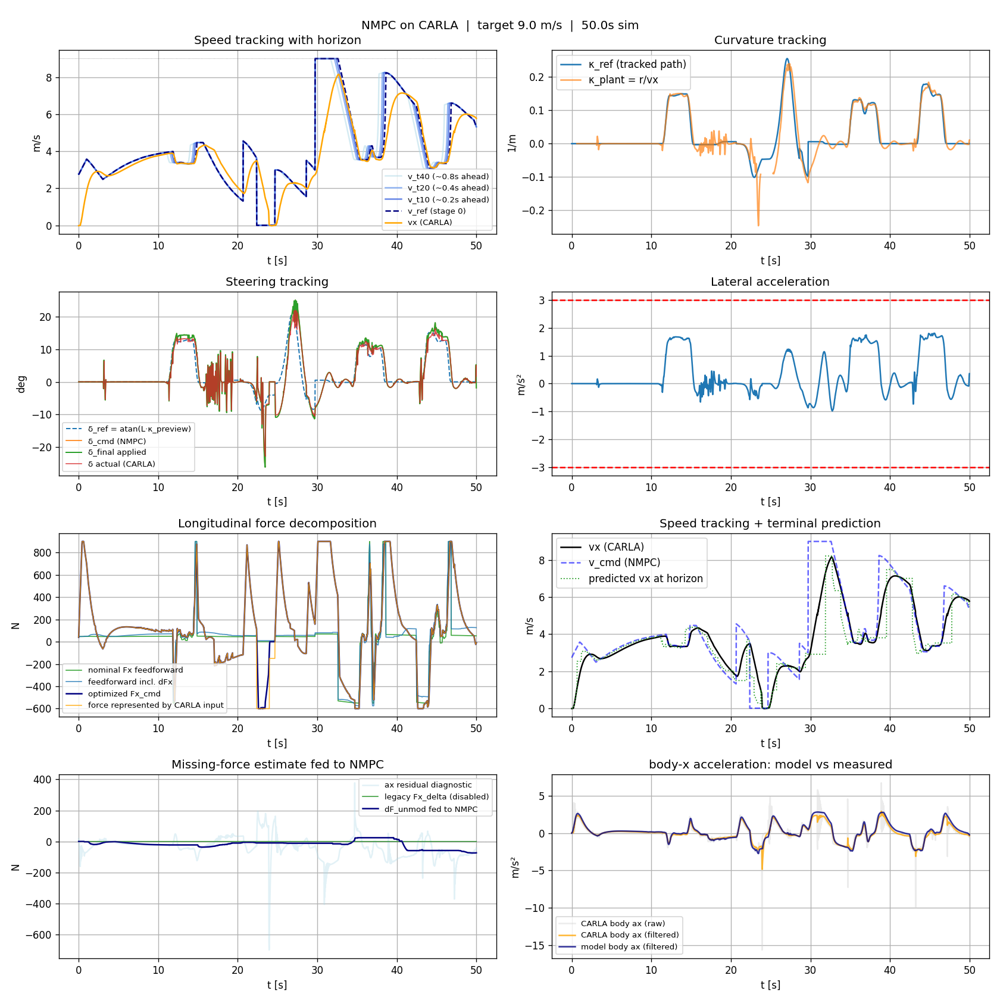

MPC Trajectory Tracking & Roll Avoidance
I built a nonlinear model predictive controller (NMPC) that follows a planned path for a small three-wheeled pod without letting it tip over in corners. It runs in real time and I test it closed-loop in the CARLA simulator.
Follow the path, respect the vehicle
A tadpole pod
A light three-wheeler with two steered wheels at the front and one at the back. The narrow track and single rear wheel mean tipping over is a bigger worry than running out of grip.
Staying safe at the limit
The pod has to follow its path closely while staying within tire grip, steering and force limits, and a cornering limit that keeps it from tipping. All of this is rechecked every 20 ms.
Plan, then optimize
A local planner gives a path and a speed plan. The NMPC works out the steering and drive/brake force to follow it within those limits, and an allocation layer turns that into commands for each wheel.
Where the cornering limit comes from
The NMPC doesn't model rollover itself. Every step it gets one number, the highest lateral acceleration the pod can safely take, \(a_{y,\max}\), and keeps its predicted cornering below it. I work that number out from the wheel geometry and the position of the center of gravity (CG), treating the pod as a rigid body.
It's not the centerline
The wheels form a triangle, so in a turn the pod tips over the line from the outer front tire to the rear tire, not over its centerline.
A simple threshold
The limit is the point where the weight can no longer hold the pod down about that line. It's quick enough to recalculate inside the control loop.
From the IMU
The pod's sensors track how the CG moves forward, back and sideways as the load changes. The pod is always loaded the same way from the top, so I treat CG height as fixed.
The limit is the lateral acceleration at which the inner front wheel's load reaches zero. I get it in three short steps, starting on a flat road with the body treated as rigid.
Two things stand out. The \(b/l\) term is what makes a tadpole different: if the CG moves back toward the single rear wheel, the limit drops fast. And longitudinal acceleration matters, because accelerating takes load off the front axle. Each 1 m/s² of throttle costs roughly 0.4 m/s² of cornering limit, while braking adds margin. You get the same answer by taking moments about the diagonal tipping line directly. The angle of the line cancels out, which is why it doesn't appear in the result.
Real suspension lets the body lean, which shifts the sprung mass outward and adds load transfer. With the body rolling in proportion to cornering (\(\varphi = R\,a_y\)), and adding road bank, grade and body pitch, the full limit is:
- m, m_s total mass, sprung (body) mass
- H CG height
- T front track width
- l wheelbase
- b distance from CG back to the rear wheel
- h_s body CG height above the roll axis
- R roll gradient: body roll per m/s² of cornering (0 for a rigid body)
- a_x longitudinal accel. (+ when speeding up)
- φ_r road bank (+ when it tips the pod outward)
- θ_r, θ road grade (+ downhill), body pitch
The NMPC gets a lateral limit with margin built in. I take the lift-off limit for the worst case the pod will meet and keep about 20% of the inner wheel's load in reserve. With passive suspension, 2 m/s² of acceleration and a flat road, that's 3.87 × 0.8 ≈ 3.1 m/s², so the NMPC's 3.0 m/s² limit holds up. The load-transfer terms follow the tadpole rollover index in “Rollover Stabilities of Three-Wheeled Vehicles Including Road Configuration Effects” by Ataei, Khajepour and Jeon; the roll substitution and the solved limit are mine.
Adding an active anti-roll bar
The general form shows that body lean costs margin. When the body rolls in a corner, its weight shifts toward the outside wheel, and the inner front wheel gets closer to lifting. A stiffer passive suspension would help, but it makes the ride harsh. So I'm adding a motor-driven anti-roll bar on the front axle. It has to go at the front, because the single rear wheel sits in the middle and can't resist roll at all.
I model the body as a single roll degree of freedom: roll inertia, damping and stiffness, pushed by cornering and resisted by the bar's moment \(M\). Gravity pulling on the leaning body works against the springs, so the effective stiffness \(K'\) is a bit lower than the springs alone.
Feedforward sets how far the body leans
I pick a target roll gradient \(R_{des}\), a fraction of the passive lean, so the driver still feels a little roll. From the lateral acceleration the NMPC is about to command, the feedforward applies exactly the moment needed to hold that lean in a steady corner. It acts before the body moves, and it does most of the work.
Feedback reshapes the suspension
The feedback gains act like extra suspension in software. The roll-angle gain \(K_p\) adds roll stiffness, and the roll-rate gain \(K_d\) adds roll damping. They don't change the steady lean, which the feedforward already sets. They change how the body moves when it gets there: how fast it settles, and how much it rocks after a quick turn-in.
Putting the controller into the roll model shows this directly. The feedback terms simply add to the hardware's stiffness and damping:
So tuning comes down to choosing the roll behaviour I want, a natural frequency \(\omega_n\) and damping ratio \(\zeta\), and solving for the two gains that turn the real suspension into that one. The frequency has to stay above the passive roll frequency (or \(K_p\) would go negative and soften the car), below wheel hop, and within the actuator's bandwidth. The damping ratio sets how much the body overshoots after a quick steering input. Raising it too far amplifies gyro noise through \(K_d\).
The motor command is the total moment divided by the bar's linkage ratio, clamped to the actuator's limit and rate-limited. Driving straight it commands zero, so a bump under one wheel isn't pushed across to the other. The bar can only stop the body leaning, not change the geometry, so it works alongside the NMPC's lateral limit. If it fails, the pod falls back to passive suspension, which the NMPC limit still covers. Near lift-off, the rollover index freezes the feedback, and if the wheel lifts, the torque ramps down.
How the controller runs each cycle
The NMPC runs every 20 ms, but a new target trajectory only arrives every 100 ms. In between, the controller has to know where the pod is on the current trajectory, rebuild its reference from there, and solve fast enough to send a command before the next cycle.
What comes in over Ethernet
The planning (ADAS) computer sends two messages over automotive Ethernet every 100 ms: the target trajectory and its own pose estimate. The trajectory message is a header followed by a list of points.
| Trajectory header | What it's for |
|---|---|
| creation_timestamp | When the planner finished building it. Freshness is judged from this, not from when it arrived. |
| trajectory_start_timestamp | The absolute time that matches the first point. Every point's time is relative to this. |
| validity_duration | How long the trajectory may be used before it counts as stale |
| frame_id, session_id | Which coordinate frame and session it belongs to. A mismatch means it's rejected. |
| planner_status | Normal, degraded, fallback or invalid, plus a reason if degraded |
| maneuver_type | Lane keep, lane change, stop or emergency, used for sanity checks (for example, a stop with a rising speed target is rejected) |
| sequence counter, CRC | Catches lost, repeated, out-of-order or corrupted messages |
| Each trajectory point | What it's for |
|---|---|
| t | Time after the start timestamp when the pod should be at this point |
| s | Distance along the trajectory. Having both t and s lets me track progress by time and by position. |
| X, Y, ψ | Position and heading |
| κ | Curvature, for the steering feedforward and the speed limit in curves |
| v, a | Target speed and acceleration request, for the speed reference and force feedforward |
| jerk, dκ/ds | Optional, when the planner provides them |
A trajectory is usually 20 to 50 points. At 40 points that's about 1.3 kB, roughly 15 kB/s at 10 Hz, which is tiny for the link.
| Pose message | What it's for |
|---|---|
| measurement_timestamp | When the pose was measured |
| frame_id, session_id | Must match the trajectory's frame |
| X, Y, ψ, vx, vy, r | The planner's pose, speeds and yaw rate |
| covariance, localization status | How much to trust it |
| sequence counter | Its own loss and order check |
I don't use the planner's pose to set up the NMPC frame. It can be up to 100 ms old, which is 2 m of error at 20 m/s. Instead it goes into my own Kalman filter as a measurement and a consistency check.
Before a trajectory is used, it has to pass the checks: fresh enough, the right frame and session, a counter in order, a valid CRC, a good planner status, and values that make sense for the manoeuvre. Points are matched to my clock by timestamp, not by arrival time, so network delay doesn't turn into a position offset. When I build the reference from waypoints myself instead, I fit a cubic spline, compute curvature from it, and run a three-pass speed profile.
Pose from the Kalman filter, and finding the start point
An EKF fuses the IMU, GPS and wheel speeds to give the pod's position, heading, forward and sideways speed, and yaw rate. Each cycle I take that fused pose at the rear axle and project it onto the trajectory to find how far along it the pod is. That distance is where the NMPC's reference starts.
Projection on its own can jump, for example where the path loops back near itself. So progress is tracked two ways: predicted forward in time from the last known point, then corrected by the projected pose. The search is seeded from the last value and checked against heading, so it can't snap to a different part of the path.
Between trajectory updates, the filter keeps propagating the pose, so the controller always starts from where the pod is now, not where it was when the trajectory was sent.
Zeroing out the current pose
Instead of solving in a fixed world frame, every cycle I set up a fresh local frame anchored at the pod's current fused pose. In that frame the pod always starts at x = 0, y = 0, heading = 0, and the reference points ahead are moved into it. Only the position and heading are zeroed. Speeds, yaw rate and actuator states carry over as measured.
Why do it
Coordinates stay small, so the solver stays well-conditioned. Heading never wraps around ±180°. And errors from a world-frame offset can't build up over a long drive.
Keeping it consistent
The frame is fixed for the whole solve, across every SQP iteration in that cycle. To warm-start the next cycle, I shift the previous inputs one step and re-simulate the states in the new frame, so the solver starts close to the answer.
The optimal control problem and solver
The model has 12 states: rear-axle position and heading, forward and sideways speed, yaw rate, and the achieved and commanded steering angle, longitudinal force and yaw moment. The inputs are the rates of the three commands, which keeps steering and braking smooth. The yaw moment comes from braking the two front wheels differently. Tires use a combined-slip model, and road drag and rolling resistance are part of the dynamics.
The cost is a least-squares sum of normalized errors: cross-track, along-track, heading, speed, sideslip, yaw rate against its reference, steering and force against their feedforward, lateral acceleration as a fraction of its limit, and the input rates. The main constraints are the lateral-acceleration limit from section 02, a grip limit on each tire with some margin, and front-wheel forces that can only brake. Both limits are soft constraints with very heavy, tightly bounded slack, so the QP never becomes infeasible.
| Piece | What I use |
|---|---|
| Modelling | CasADi, with acados generating C code for the solver |
| NLP method | SQP-RTI (one real-time iteration per cycle), with Gauss-Newton Hessian. I tested full SQP with several iterations during tuning. |
| QP solver | HPIPM (interior point, partial condensing) for the closed loop. I also compared an active-set QP solver (qpOASES). |
| Integrator | Explicit Runge-Kutta, with per-stage durations |
| Horizon | 40 stages, 0.8 to 1.6 s depending on speed |
| Robustness | Minimum-speed floor on 1/vx terms, and a fallback command if the solver returns a bad status |
The model is built and the C code generated once in Python on my machine. Only the compiled C runs in the loop, which is what makes it portable to embedded targets.
What I measure
| Metric | Target |
|---|---|
| Curvature tracking error (RMS) | under 0.010 1/m |
| Peak lateral acceleration | at or below 3.0 m/s² |
| Speed tracking error on straights (RMS) | under 1.0 m/s |
| Cross-track and heading error | logged every cycle and checked per run |
| Comfort braking | no deceleration beyond 3.5 m/s² outside emergencies |
| Solve time and solver status | inside the 20 ms budget, with failed or step-limited solves counted |
| Smoothness | steps in the acceleration reference and steering steadiness |
Space-time Hybrid A*
My first planner found a path and only afterwards worked out when the pod would get to each point. If that path crossed an oncoming car, all it could do was throw the path away. So I added time and speed to the Hybrid A* search. Now the planner can come back with a plan like "slow down, wait for that car, then pass", not just a shape to drive.
It predicts where nearby cars will be over the next few seconds and only accepts moves that stay clear of them at that moment. If a simple lane-change path already looks fine and only the timing is the problem, it keeps the shape and just changes the timing. Otherwise it runs the full search. The NMPC then follows the shape of the path and its speed plan, stops wherever the plan says to wait, and never gets ahead of the plan. Getting ahead would make the planner's checks against other cars meaningless.
At the 9 m/s design speed it drives all four CARLA test towns without a collision. I'm now working on making it hold up at 15 m/s in heavy traffic.
The rest of the stack
Pose-tracking NMPC
A 12-state model of the pod tracks position, heading and speed directly. It re-solves the optimization every control step with acados, and takes steering, force and braking rates as its inputs so the commands stay smooth.
Friction-ellipse tire model
The tire model links cornering and braking forces, and each tire is kept inside its friction ellipse, so the controller respects grip as well as the roll limit.
Space-time Hybrid A* planner
Searches over time as well as position, so it can plan to wait for an oncoming car and then pass. It gives the NMPC a path plus a speed plan (section 04).
Offset-free speed control
An observer estimates road load that the model doesn't capture and corrects for it, so speed tracking stays accurate even though the simulator doesn't match my model exactly.
Running in CARLA
Here's the pod driving in CARLA next to my live telemetry dashboard, showing speed, steering, curvature, tracking error and how much grip each tire is using.
